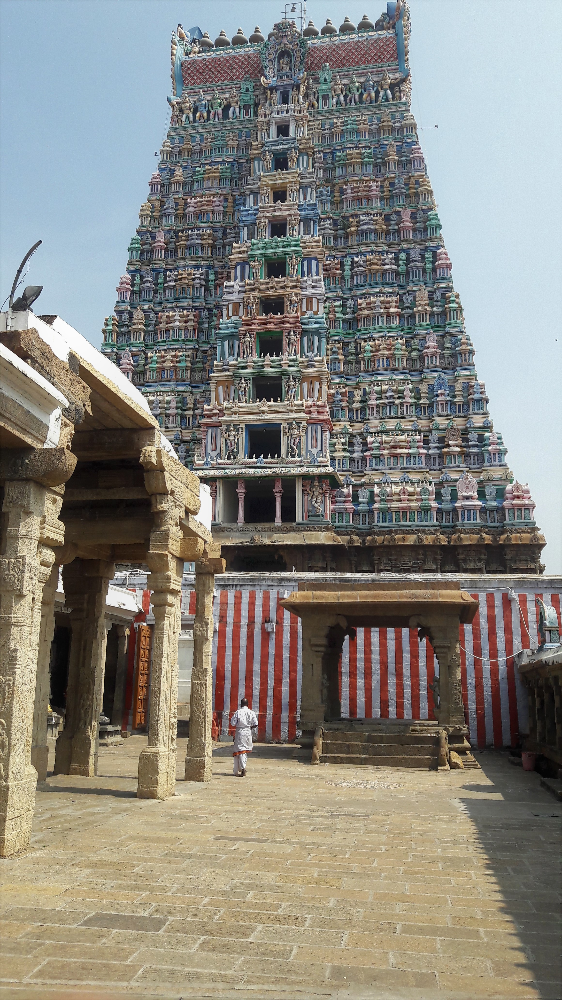
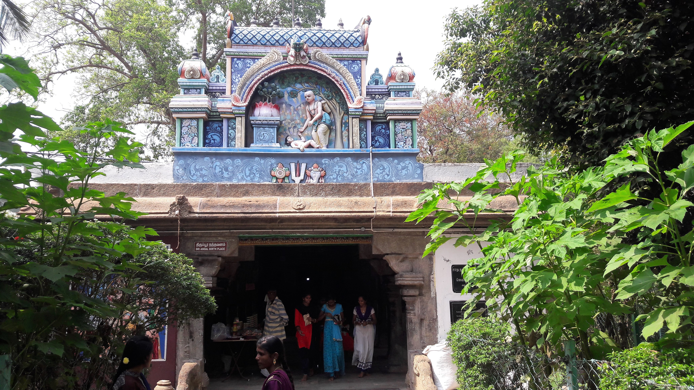
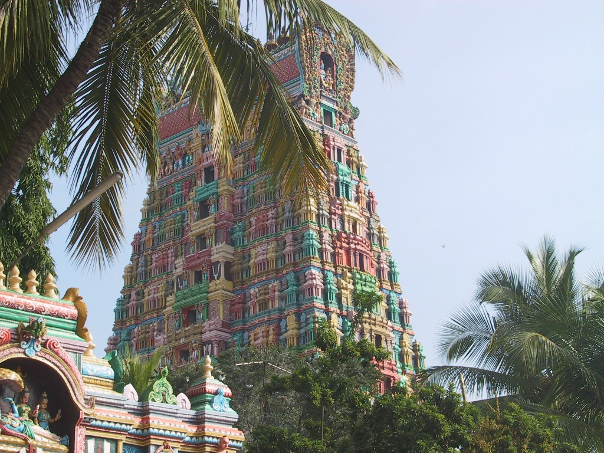
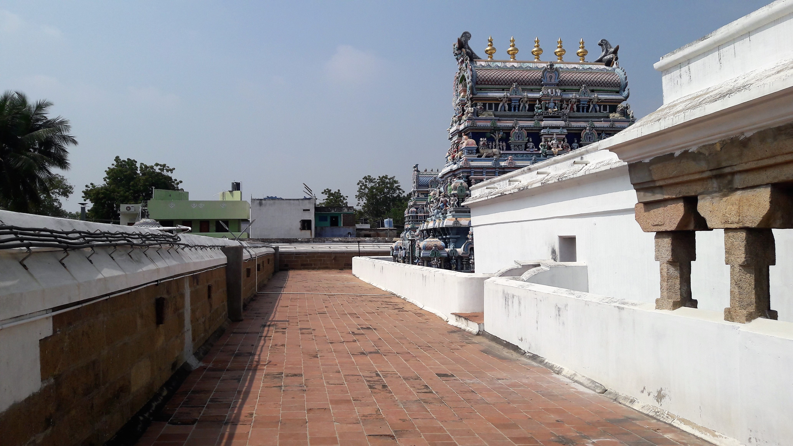

Srivilliputhur Andal Temple
Srivilliputhur – The Sacred Abode of Andal and Eternal Devotion
Overview
The Srivilliputhur Andal Temple is one of the most revered and celebrated Divya Desams — the 108 sacred Vishnu temples praised in the early medieval Tamil canon of the Alvars — and is considered an integral part of South Indian Vaishnavite heritage. Located in Srivilliputhur in Virudhunagar district, Tamil Nadu, India, the temple’s towering Rajagopuram (main gateway tower) rises majestically above the town, reaching nearly 192 feet with eleven intricately sculpted tiers that display legends and deities carved in stone. The temple complex not only offers a deep spiritual ambience for devotees but also stands as an architectural masterpiece of Dravidian temple design, combining artistic craftsmanship, structural engineering, and devotional symbolism that has endured for centuries under successive dynastic patronage.
Sthala Purana (Legend and Spiritual Narrative)
The temple’s Sthala Purana (local sacred history) revolves primarily around Andal, the only female Alvar saint, whose life and devotion to Lord Vishnu define the spiritual identity of this temple. Legend holds that Andal was miraculously found as a child in a tulsi (holy basil) garden by the Vishnu devotee Saint Periyalvar, who raised her with immense care and love within the temple precincts. From an early age, Andal’s devotion was extraordinary — she composed devotional hymns such as the Thiruppavai and exhibited a deep longing to unite with Lord Vishnu spiritually. A famed episode in her life tells of how she would wear the garlands intended for the deity before offering them each day, believing she alone was fit to present them to the Lord; instead of anger, Vishnu blessed her devotion. Ultimately, Andal’s mystical union with the Lord — often interpreted as her marriage to Ranganatha at Srirangam — symbolizes her complete surrender and eternal devotion, making her both a saint and divine consort in Vaishnavite tradition.
Moolavar and Temple Deities
At the heart of the Srivilliputhur Andal Temple are its main deities: Vatapatrasayi (a reclining form of Lord Vishnu) and Andal (also called Godadevi or Nachiyar). The sanctum of Vatapatrasayi depicts the Lord resting on the serpent Adisesha, while Andal has a prominent shrine near the temple’s Nandavanam (flower garden) — the very site where she is said to have been found and nurtured. While many temples might focus on a single primary deity, the twin focus here underscores both the divine presence of Vishnu and the divine devotion embodied in Andal, making the temple a unique spiritual centre where worship is offered to both Lord and devotee together. The complex also includes shrines for Periyalvar and other divine figures found in the Divya Prabandham, with detailed stone carvings throughout the temple narrating pastimes and devotional scenes symbolic of Tamil Vaishnavism.
Unique Heritage and Divine Legends of Srivilliputhur Andal Temple
The Srivilliputhur Andal Temple stands apart from other sacred Vishnu temples in India due to its deep connection with Andal and Periyalvar, making it a singularly important pilgrimage site. It is the birthplace of Andal, the only female among the twelve Alvar saints, and her father-figure, Periyalvar, a revered Vaishnavite poet-saint. Legend has it that Andal was discovered as a newborn under a sacred tulsi plant in the temple garden by Periyalvar, who adopted her and nurtured her devotion to Lord Vishnu from infancy. Her life became an enduring example of unwavering devotion (bhakti), expressed in her timeless Tamil compositions, the Thiruppavai and Nachiar Tirumoli, still recited by devotees every day. One of the temple’s most extraordinary traditions is that Andal herself would wear the garlands intended for the Lord before offering them, a unique act of devotion that no other temple preserves in daily worship. This custom was divinely approved through a dream received by Periyalvar, and today the garlands are still first adorned by Andal before being presented to Vatapatrasayi (Lord Vishnu). Additionally, the sanctum arrangement is exceptional: Garuda, Andal, and Lord Rangamannar (Vishnu as Andal’s divine consort) share the same sanctum, enabling devotees to witness the divine trio together — a phenomenon that is not found in most other Vishnu temples. These elements, combined with the temple’s rich cultural practices, make Srivilliputhur not just a place of worship, but a living embodiment of devotional literature, spiritual storytelling, and historical legacy.
Architectural Grandeur and Unique Rituals
Beyond its legends, the temple’s architectural grandeur further distinguishes it. Its towering Rajagopuram, rising to nearly 192 feet with eleven intricately sculpted tiers, is more than a gateway; it is an official emblem of Tamil Nadu, recognized for its artistic and cultural significance. Every tier depicts mythological scenes, deities, and intricate carvings reflecting centuries of Dravidian artistry, making it an unmatched masterpiece among temple towers. Inside Andal’s shrine, another unique ritual continues daily: a hand-crafted floral parrot is placed in Andal’s hand, a painstaking and devotional practice that symbolizes life, nature, and the playful aspect of divine grace. The walls of the shrine themselves narrate Andal’s life through detailed paintings and carvings, while the temple halls showcase large Vijayanagara-era sculptures and decorative pillars. Combined with the recitation of Andal’s Thiruppavai during the Margazhi month, festivals like Aadi Pooram, and daily rituals, these features make the temple a rare fusion of spiritual, literary, and artistic heritage, truly unparalleled in South Indian temple tradition.
Temple Timings and Rituals
The temple welcomes devotees early each day, typically opening its doors at around 6 :00 AM and remaining accessible until around 1 :00 PM, before reopening in the late afternoon until about 8 :45 PM to 9 :00 PM (timings vary slightly by season and festival dates). Within these hours, traditional six daily poojas are meticulously performed at set times — Ushathkalam, Kalasanthi, Uchikalam, Sayarakshai, Irandamkalam, and Ardha Jamam — each consisting of alangaram (decoration of deities), neivethanam (offering of food), and deepa aradanai (waving of sacred lamps), accompanied by the resonant sound of nadaswaram and tavil instruments along with Vedic chanting by temple priests. These rituals not only engage the senses but immerse visitors in an atmosphere of devotion and sacred rhythm, with weekly and monthly observances adding layers of communal chanting and special worship practices.
Morning: 5:00 AM – 12:30 PM
Evening: 4:00 PM – 10:00 PM
Festivals
The temple’s festival calendar pulses with devotion and cultural richness throughout the year. Chief among them is Aadi Pooram, celebrated during the Tamil month of Aadi (July–August) as the birth anniversary of Andal — a grand festival involving ten days of vibrant processions, decorated palanquins carrying the images of Andal and Ranganatha, special poojas, music, and community festivities that attract devotees from across the state. In addition to Aadi Pooram, the temple honours Margazhi Utsavam (December–January) with special recitations of Andal’s Thiruppavai, Purattasi Utsavam, Panguni Thirukkalyanam (the celestial wedding of Andal and the Lord), Aani Alvar Uthsavam, and Unjal (swing) ceremonies among others. These festivals are not merely rituals — they integrate devotional storytelling, community participation, music, and ancient temple arts that have bound generations of Tamil devotees to the temple’s spiritual legacy
History
The Srivilliputhur Andal Temple’s history stretches across many centuries, marked by contributions from various South Indian dynasties including the Cholas, Pandyas, Vijayanagara rulers, and Nayaks. Its architectural features reflect the pinnacle of Dravidian temple design: a sprawling complex of carved pillars, exquisitely sculpted stone figures, broad assembly halls (mandapams), and towering gopurams that mirror the cultural and artistic fervour of medieval Tamil kingdoms. The Rajagopuram’s 11 tiers — each brimming with sculptural detail — not only herald the devotee’s entry into a sacred space but represent sculptural narratives of mythic lore and divine beings, showcasing advanced craftsmanship of artisans across eras. Successive renovations, patronage, and temple endowment records underline the temple’s importance as a cultural and religious fulcrum in southern India, with inscriptions and temple design details linking it to significant rulers and devotional practices.
Temple Gallery




Darshan & Special Poojas
Devotion at Srivilliputhur goes beyond routine temple visits — pilgrims and visitors often seek special poojas and devotional services, especially during auspicious days or festivals. Daily worship includes intricate rituals that resonate with sincerity and ancient tradition, but devotees can also participate in special devotional services or sacred fire rituals (homas) available with prior booking, offering a deeper participation in temple rites. Fridays and Saturdays are traditionally regarded as especially fortunate for darshan, as many devotees believe the blessings of Andal are particularly accessible on those days. Special occasions like the Margazhi Utsavam, Panguni Thirukkalyanam, and Purattasi Sevams draw crowds for collective prayers, cultural music, and recitations that enhance the temple’s spiritual rhythm.
Official Information & Contact
For official updates, darshan details, and announcements, devotees may visit the official website of the Srivilliputhur Andal Temple where updates on festivals, timings, and official announcements are posted.
🌐 Official Website:
https://srivilliputhurandaltemple.tnhrce.in
📞 Temple Contact:
+91 04563‑260254
📧 Email:
There isn’t a widely publicised official email for the temple itself, but devotees can use the Tamil Nadu HRCE (Hindu Religious & Charitable Endowments) official portal to send enquiries or feedback.
Temple Location
The temple is located in Srivilliputhur, Virudhunagar District, Tamil Nadu, India — a historic Vaishnavite pilgrimage town with strong cultural ties to Andal and the Alvar tradition. Srivilliputhur is well connected by road and rail: the Srivilliputhur Railway Station connects to major cities in Tamil Nadu, and regular buses ply from Madurai and Virudhunagar to the town. The nearest airport is Madurai International Airport, roughly 70–75 km away, from where travelers can hire taxis or take state transport buses to reach the temple.
📍 Get Directions to Temple